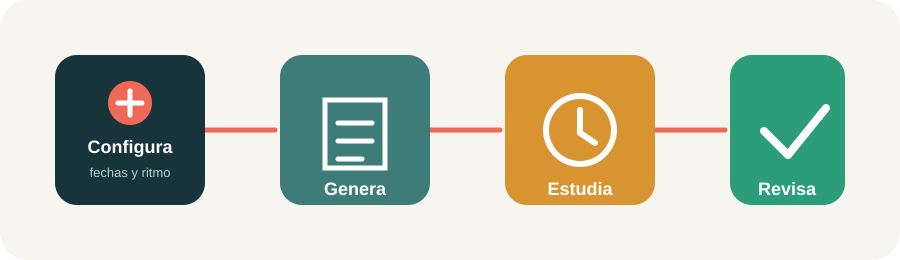
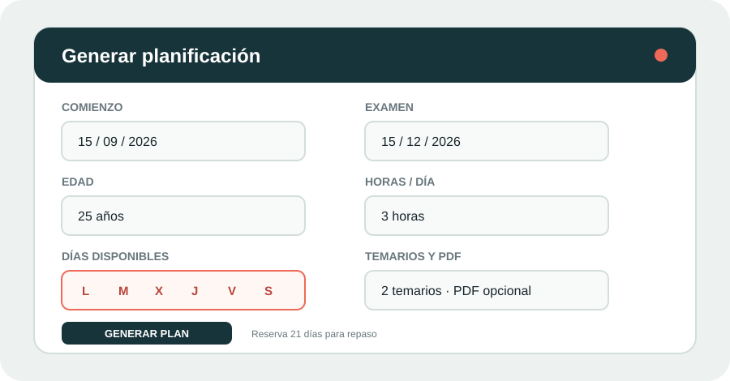
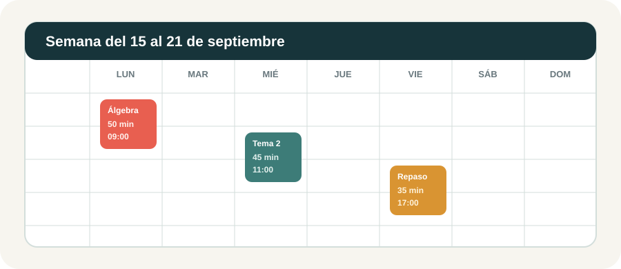

Crea una cuenta o inicia sesión para acceder a tu planificación desde cualquier dispositivo.
Planificación
Agenda semanal por horario
Total
0
tareas
Completadas
0
hechas
Tiempo
0
min
Hoy
0
bloques
Semana
Hecho Planificado En curso Clase
Resumen del día
Trazabilidad
Seguimiento semanal
Temporizador
25:00
Selecciona una tarea del día para registrar el enfoque.
Planificador inteligente
Generar planificación
Reserva automáticamente al menos 3 semanas finales para repasar. Cada tema incluye preguntas obligatorias y un supuesto práctico antes de pasar al repaso espaciado.
Importar plan
Sin archivo de planificación cargado
Elimina solo las tareas del calendario. Tus tests, notas y copias no se borran.
StudyFlow convierte tus objetivos, disponibilidad y temario en una agenda semanal con bloques concretos. Puedes trabajar solo con el navegador o iniciar sesión para sincronizar tus datos.

El método completo en cuatro pasos: primero describe tu realidad, después deja que StudyFlow distribuya el trabajo.
1. Primer acceso y navegación
En la barra lateral puedes filtrar todas las tareas, las de hoy, las próximas o las completadas. El calendario muestra una semana cada vez; usa Semana anterior y Semana siguiente para moverte. Selecciona un día para ver su resumen a la derecha.
La tarjeta Siguiente bloque muestra la próxima sesión. Las estadísticas superiores resumen tareas, completadas, minutos y bloques del día. Si tienes cuenta, inicia sesión antes de trabajar para sincronizar los cambios.
2. Generar una planificación automática

Completa los campos de arriba abajo. Los días marcados son los únicos que recibirán sesiones.
Fechas: el comienzo es el primer día posible; el examen es una fecha límite, no una sesión de estudio.
Edad y horas: indica una capacidad sostenible, incluyendo pausas y obligaciones. Es mejor introducir 2 horas mantenibles que 6 imposibles.
Asignaturas: en E.S.O., F.P., universidad y máster indica cuántas asignaturas o módulos tendrás. Después escribe el nombre de cada uno y sus temas, uno por línea; si no los escribes, se crearán temas numerados como punto de partida.
Días: marca solo días realmente disponibles. Los días sin marcar nunca recibirán sesiones.
Descansos: 50 minutos de trabajo y 10 de pausa es un punto de partida equilibrado; usa 25/5 si te cuesta arrancar.
PDF: adjunta un índice o temario con texto seleccionable y pulsa Analizar PDF y revisar índice. StudyFlow reconoce temas, páginas y extensión aproximada; puedes corregir títulos o excluir anexos antes de generar.
Resultado: pulsa Generar plan. Se importa automáticamente y queda disponible para descargar como Markdown.
El generador reserva siempre los 21 días anteriores al examen para repasar. Si el periodo es demasiado corto o la carga no cabe con tu disponibilidad, solicita más tiempo, más horas o menos temas.
Pausas: en modo Recomendadas, StudyFlow parte de pautas orientativas de hábitos de estudio usadas en contextos educativos: 25/5 para sesiones cortas, 50/10 como punto de partida y 45/10 cuando la carga, la edad o la dificultad aconsejan más frecuencia. No existe una única pauta oficial válida para todas las personas; puedes cambiar a Personalizadas e indicar exactamente el intervalo de trabajo y la duración de la pausa.
Partes del curso: cada temario o parte tiene nombre, número de temas y clases semanales. Si una parte tiene tres clases y otra una, el plan intercala aproximadamente tres bloques de la primera por cada bloque de la segunda, manteniendo el total de contenido y el repaso final.
Flujo académico recomendado: para E.S.O. crea una asignatura por materia y escribe las unidades o bloques del trimestre; para F.P. crea un módulo por cada módulo profesional y añade unidades, prácticas o resultados de aprendizaje; para universidad y máster crea una asignatura por materia y añade los temas, lecturas, problemas o entregas principales. El generador conserva esos nombres, reparte la presencia según las sesiones semanales y añade ejercicios o actividades de aplicación adaptados al tipo de curso.
3. Cómo calcula el tiempo
La estimación parte de una duración base y la ajusta por dificultad. Los temas con términos complejos, problemas, excepciones o títulos extensos reciben más tiempo. La edad aplica un factor gradual: a partir de los 25 años aumenta moderadamente la duración estimada; no sustituye a tu propia experiencia ni pretende medir la capacidad de una persona.
Temarios completos: sí, puedes subir PDFs extensos, no solo índices. StudyFlow lee el texto seleccionable página a página, detecta encabezados como “Tema 1”, “Unidad 2” o “Capítulo 3” y estima el tamaño de cada tema por el número aproximado de páginas hasta el siguiente encabezado. Si el PDF es un escaneado de imágenes o no tiene encabezados reconocibles, usará el número de temas indicado y una estimación genérica; en ese caso conviene revisar el resultado.
Conversor orientado a temarios: el botón de análisis crea un índice Markdown estructurado por temario. La tabla permite cambiar títulos, ajustar la extensión y excluir anexos o partes que no entren en el examen. Si confirmas la revisión, el generador reutiliza ese índice y no vuelve a procesar el PDF completo.
PDF escaneado: si no se detecta texto, aparece Intentar OCR del PDF. El OCR se ejecuta bajo demanda en el navegador, analiza como máximo 80 páginas por operación y puede tardar; después debes revisar el índice porque el reconocimiento de imágenes no es infalible.
Práctica obligatoria por tema: al terminar cada tema, el plan añade un bloque de preguntas de recuperación o test y otro de supuesto práctico/caso aplicado. La dificultad determina su duración: un tema difícil necesita más preguntas y un caso más largo. Si una parte no utiliza supuestos prácticos, puedes editar o eliminar esos bloques desde Editar calendario.
Cada tema se divide en bloques respetando tus descansos. El plan generado propone repasos espaciados aproximadamente a 1, 3, 7, 14 y 21 días cuando caben en el calendario. Cada bloque indica qué hacer: recordar sin apuntes, practicar, corregir errores, hacer un test o preparar una síntesis final. Revisa la primera semana y modifica manualmente los bloques si tu experiencia real difiere.
4. Leer el calendario semanal

Los colores distinguen sesiones planificadas, en curso y completadas; cada bloque muestra tema, duración y hora.
Lee cada columna como un día y cada bloque como una sesión ejecutable. Empieza por la hora indicada, marca la tarea como completada cuando termines y usa la dificultad para señalar qué debe recibir más atención.
Los botones PDF / imprimir, Descargar JPEG y Fondo SVG exportan la semana visible. El PDF se obtiene desde el diálogo de impresión; el JPEG sirve para compartir y el SVG mantiene la nitidez al usarlo como fondo de escritorio en Windows, macOS o Linux.
5. Crear o editar una tarea manual
Pulsa + Nueva tarea, completa tema, materia, duración, fecha, hora, prioridad, estado y dificultad, y guarda. Para editar o eliminar tareas, activa Editar calendario y usa los controles del bloque.
6. Importar un fichero
En Importar plan puedes seleccionar Markdown, TXT, DOCX o PDF, pegar texto o cargar el ejemplo. También se acepta una línea por tarea:
El orden es: título, materia, minutos, fecha ISO, hora y prioridad. Las líneas marcadas con [x] entran como completadas.
Para sustituir una planificación, pulsa Eliminar plan actual, confirma el aviso y después genera o importa el nuevo fichero. Esta acción solo elimina las tareas del calendario; conserva el cuaderno de errores, los tests y las copias de seguridad.
7. Estudio, temporizador y repasos
El temporizador ofrece sesiones de 15, 25 o 50 minutos y permite introducir una duración personalizada. Enciéndelo al comenzar y reinícialo al terminar o cambiar de tarea.
La aplicación propone repasos usando dificultad, resultados de tests y entradas del cuaderno de errores. Una sesión eficaz tiene un objetivo visible: leer, resumir, resolver, corregir o recuperar de memoria.
8. Tests y cuaderno de errores
Guarda aciertos y fallos de cada test para consultar tu precisión. En el cuaderno puedes asociar un error a una tarea y marcarlo para repaso posterior. El buscador encuentra coincidencias por materia, tema o texto.
Usa Imprimir / PDF para crear un informe del cuaderno. El informe respeta el filtro de búsqueda actual, resume errores, materias y repasos pendientes, y deja una línea para anotar la próxima acción. En el diálogo de impresión elige Guardar como PDF o una impresora.
9. Trazabilidad y ajustes
El panel Seguimiento semanal compara los bloques planificados con los completados en la semana visible. También muestra minutos realizados, pendientes, errores marcados para repaso y precisión de los tests.
Con menos del 60% de cumplimiento sugiere reducir la carga siguiente y recuperar lo esencial; entre el 60% y el 85% recomienda mantener el ritmo y reservar un bloque para pendientes; por encima del 85% propone mantener la carga y adelantar solo contenido que puedas recuperar activamente. Los errores y los fallos de tests hacen que recomiende priorizar repasos y práctica antes de avanzar.
10. Copias de seguridad y sincronización
Exportar copia descarga tareas, tests y notas en JSON. Restaurar copia reemplaza los datos actuales por el fichero seleccionado, así que conviene exportar antes.
Sin iniciar sesión, los datos viven en el navegador actual. Con una cuenta, StudyFlow sincroniza tareas, tests y notas con Supabase para acceder desde otros dispositivos.
10. Rutina recomendada
Al comenzar el día, revisa el bloque siguiente y prepara solo el material de esa sesión.
Durante la sesión, estudia con el temporizador y anota dudas en el cuaderno, no interrumpas el bloque para resolverlas todas.
Al terminar, marca la tarea y registra un test breve o una pregunta de recuperación.
Al final de la semana, compara tiempo previsto y real y ajusta las siguientes sesiones.
11. Solución de problemas
Si un PDF no detecta temas, comprueba que el texto se puede seleccionar y escribe manualmente el número de temas.
Si no caben las sesiones, aumenta el periodo hasta el examen, selecciona más días o reduce las horas de otras obligaciones.
Si no ves una tarea, revisa el filtro activo y la semana seleccionada.
Si cambias de navegador o dispositivo sin iniciar sesión, restaura una copia JSON.
Control privado
Administración
Usuarios--Usuarios activos--Accesos suspendidos--Planes de pago--Confirmaciones pendientes--Actividad registrada--